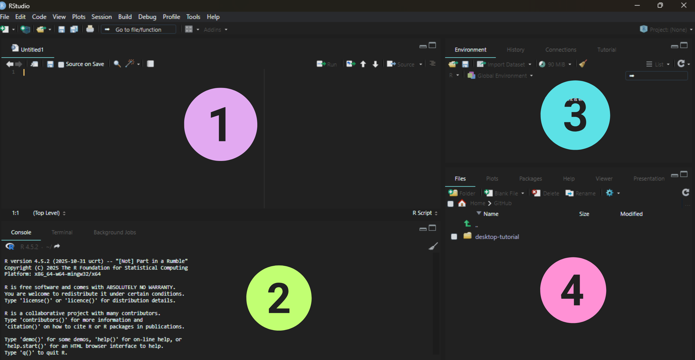

8 Conceptos de R
8.1 ¿Qué es R?
Lenguaje de programación y entorno de software creado en 1993 por Ross Ihaka y Robert Gentleman en la Universidad de Auckland, Nueva Zelanda.
R está diseñado para el análisis estadístico, la visualización de datos y la computación científica.
Software libre y de código abierto.
Multiplataforma (Windows, macOS y Linux).
Permite realizar análisis reproducibles y automatizados.
R es ampliamente utilizado en biología, ecología, ciencias sociales, economía y muchas otras disciplinas.

8.2 ¿Qué es RStudio?
RStudio es un Entorno de Desarrollo Integrado (IDE) que facilita el uso de R.
Ofrece una interfaz amigable con herramientas para escribir código, visualizar datos y administrar proyectos.
Ventajas:
Permite ejecutar código y ver resultados de inmediato.
Integra control de versiones (Git).
Incluye paneles para trabajar con archivos, gráficos, paquetes y ayuda.
Facilita la creación de reportes, presentaciones y scripts reproducibles.

8.3 Filosofía de R
Promueve la ciencia abierta y reproducible.
Fomenta la transparencia en los análisis al guardar todo el flujo de trabajo en código.
Comunidad activa que desarrolla miles de paquetes (CRAN, Bioconductor, GitHub).
8.4 Diferencias con hojas de cálculo
Herramientas como Excel o Google Sheets son útiles para tareas básicas, pero:
Limitan el tamaño de los datos.
No documentan los pasos del análisis.
No son fácilmente reproducibles.
R permite registrar y compartir todo el proceso analítico con unas pocas líneas de código.
8.5 Interfaz básica de RStudio
Cuando abres RStudio encontrarás cuatro paneles principales:
Source (arriba a la izquierda): donde escribes y editas código.
Console (abajo a la izquierda): donde se ejecutan los comandos.
Environment / History (arriba a la derecha): muestra los objetos creados y el historial de comandos.
Files / Plots / Packages / Help / Viewer (abajo a la derecha): para explorar resultados, archivos y documentación.

8.6 Flujo de trabajo en RStudio
Existen dos formas principales de trabajar dentro de RStudio:
- Probar y jugar en la consola interactiva de R, y luego copiar el código a un archivo
.Rpara ejecutarlo más tarde.
Esta opción es útil al realizar pruebas pequeñas o cuando estás comenzando.
Sin embargo, puede volverse tediosa conforme tu código crece.
- Escribir directamente en un archivo
.Ry usar los atajos de teclado de RStudio para ejecutar líneas o bloques de código en la consola interactiva.
Es una excelente forma de trabajar desde el inicio, ya que todo tu código queda guardado.
Podrás ejecutar el archivo completo desde RStudio o mediante la función
source()de R.
8.7 Material suplementario
Para aprender más sobre R y RStudio puedes consultar los siguientes recursos abiertos:
The Carpentries. (2025). R for Reproducible Scientific Analysis. https://swcarpentry.github.io/r-novice-gapminder/
CRAN. (2025). The Comprehensive R Archive Network. https://cran.r-project.org/
Wickham, H. & Grolemund, G. (2017). R for Data Science. O’Reilly Media. https://r4ds.had.co.nz/
RStudio Education. (2024). RStudio Primers. https://posit.cloud/learn/primers